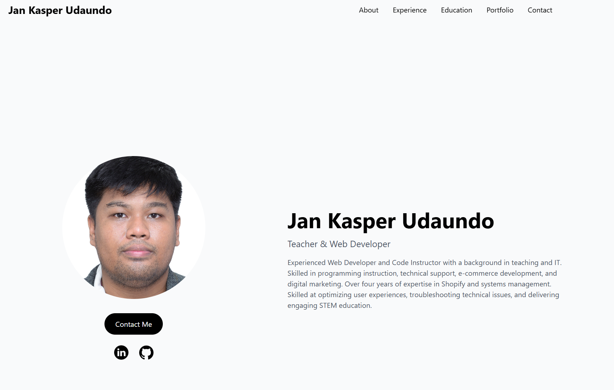

Portfolio Website
A modern, responsive portfolio showcasing my work and skills
Project Conception
Identified the need for a professional online presence to showcase my web development skills and projects. Started planning the overall structure and features needed for an effective portfolio website.
- Researched portfolio design trends
- Created wireframes and mockups
- Defined project scope and goals
Design Phase
Developed a clean, modern design system with focus on usability and accessibility. Created a color scheme and typography system that reflects my personal brand.
- Designed responsive layouts
- Established color palette and themes
- Created reusable component designs

Development - Core Features
Built the foundational structure using semantic HTML5, implemented responsive CSS layouts, and added interactive JavaScript features.
- Developed responsive navigation system
- Implemented smooth scrolling and animations
- Created portfolio card components
- Built contact form with validation
Advanced Features
Enhanced the website with particle effects background, theme switching functionality, and dynamic content loading for an engaging user experience.
- Integrated Particles.js for animated background
- Implemented dark/light theme toggle
- Added skill carousel with smooth transitions
- Created project showcase with filtering
Testing & Optimization
Conducted thorough testing across different devices and browsers, optimized performance, and fixed accessibility issues.
- Cross-browser compatibility testing
- Mobile responsiveness refinement
- Performance optimization (image compression, code minification)
- Accessibility improvements (ARIA labels, keyboard navigation)
Launch & Deployment
Successfully deployed the portfolio website to production, set up continuous deployment, and shared it with the professional community.
- Deployed to Netlify with custom domain
- Set up GitHub repository
- Configured continuous deployment
- Shared on professional networks
Results & Improvements
The portfolio website has become a central hub for showcasing my work, receiving positive feedback from potential employers and clients.
- Increased visibility in job applications
- Positive feedback from industry professionals
- Regular updates with new projects
- Continuous feature enhancements